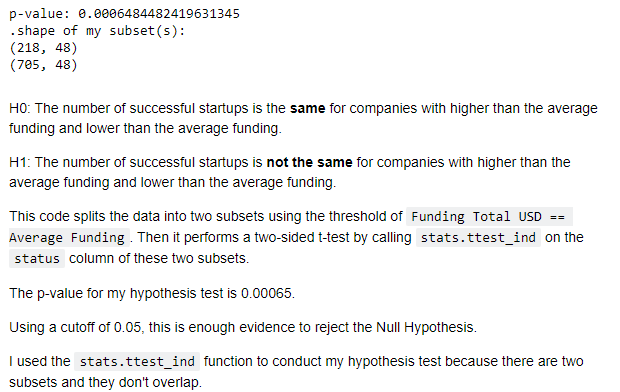
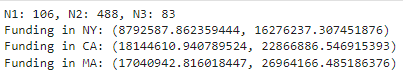
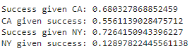
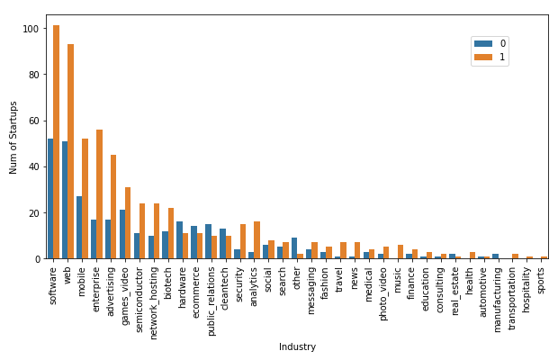
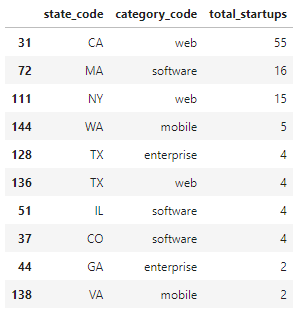
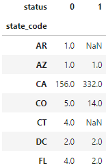
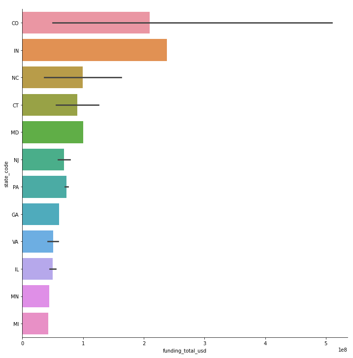
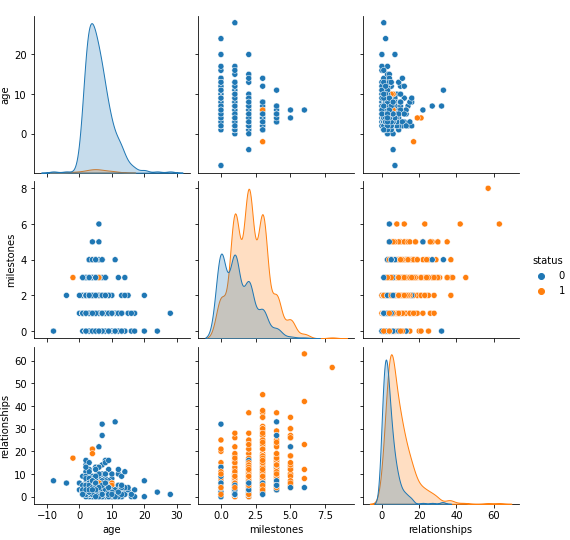
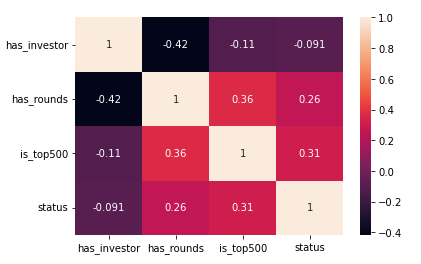
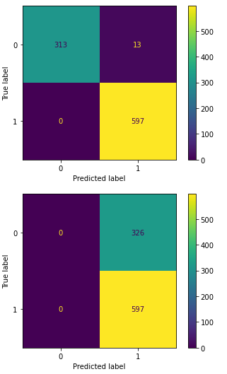

What Factors Determine Startup Success?
Authors: Shirley Wang, Naveen Siva, Reagan Razon, Riya Kabra, Vivian Guo
Part 1: Introduction and Research Questions
The world is constantly changing, and it calls for massive and rapid innovation to keep up with the pace of everyday life. Startups are one such driver of change; they transform our economies and create an advanced, progressive environment for the future. Startups not only stimulate financial growth, but also address the needs of those around the world.
From a high-level perspective, we seek to find out what makes startups successful and why with the data analysis skills. We define success by a completed M&A or IPO. From a low-level standpoint, we have some much more specific questions that we hope to analyze, outlined below:
- What industries tend to have more successful startups?
- Relative to its funding amount, what is the probability that a startup becomes successful?
- How does a startup’s location impact its funding and success?
This research goal of the success of a startup and its underlying research questions regarding funding are substantial, feasible, and relevant. Throughout the project, we will demonstrate these characteristics. To begin with, we register this topic as heavily relevant to current society due to startups’ prominent role in engineering innovation; it helps us investigate the structures of these actors of change.
We did not significantly change any parts of our intended project plan as these research questions continued to be applicable and important within our analysis. We instead decided to add on to our analysis and build a comprehensive machine learning model to enhance our conclusion.
Part 2: Data Sources
The primary data source that we used is from Kaggle, a well-reputed database that includes a variety of datasets that have been previously utilized for exploratory data analysis and machine learning algorithm creation. Our specific dataset is named “Startup Success Prediction” and revolves around factors and indicators related to the success of a startup. The data set is provided by Ramkishan Panthena, a GMO machine learning engineer. There are 20 unique contributors to the set, and it has been viewed almost 40,000 times, which provides credibility and reliability of the data source.
There are 48 different attributes/columns included within the dataset that directly correspond to a unique company. Those include information about the startup such as founding year, industry type, milestones, etc. Additionally, they include factors that may contribute to crucial insights about investments such as funding amount, funding rounds, acquisition status, etc. The rest of the attributes can be viewed in the dataset (cited below). All of these attributes enable us to successfully make conclusions surrounding our research question: what makes a startup successful.
To clean and wrangle the data and make it suitable for our analysis, we had to:
- Remove the “unnamed” column because its attributes would not be of use, given that there is no description of what the values in this column represent
- Make the values for the “id” column a number, rather than a string with “c: 1234.” This makes this key value easier to work with when identifying the startups.
- Drop variables that have more than 50% null data
- Drop the column “unnamed:6” because it holds values representing the location and zip code of the startup which is not necessarily relevant to our final goal
- Drop column “state_code.1” after checking that the column values are the same as “state_code”
- Drop “object_id: because this is a duplicate column of “id”
- Create an age column of the startup by finding the difference of “founded” and “closed” dates
Citation of dataset: https://www.kaggle.com/datasets/manishkc06/startup-success-prediction
Part 3: What Modules are You Using
Throughout this project, we are using Numpy and Pandas by default. Below are additional modules that we will utilize in order to make this project successful:
- Module 4: Data Wrangling - No dataset is a clean dataset. Our justification is that we used data wrangling in order to improve our data usability and be able to make conclusions regarding our research on startups. We did this by examining each of the columns and seeing if we had duplicates, interpreting null values, and reformatting data points like the company id. We dropped variables that had more than 50% null data or were otherwise not useful to our analysis. If columns held all the same exact values, like “state_code” and “state_code.1” we kept one column. We calculated the difference between start and end dates and added an “age” column to help us answer the question of “how does a startup’s age impact its funding and success?” We utilized data cleaning concepts from the module that revolved around NULL values, quantitative data entry errors that deviate from the norm, non-uniform sampling, and more. This module is used for the initial data gathering and data cleaning stage and ultimately final report stage.
- Modules 3 & 5: Probability / Statistical Inference - We used this in order to compute whether success is dependent on certain factors of a startup (specifically: funding obtained, source of funding, age, etc.) and whether or not such dependencies were statistically significant to the success of a startup. Our justification is that it helps us analyze what core competencies actually result in startups succeeding. We are using concepts such as Bayes Theorem, Null / Alternative Hypotheses, and statistical significance to reach conclusions about what leads to the success of a startup. This is part of the data analysis / data investigation stage and ultimately leads to our final report results.
- Module 8: Visualization: To make this project easily digestible and interesting to a general audience, it is necessary to use visualizations to display our findings. Our justification is that our dataset has over 900 startups with over 40 columns, so using data visualization can help portray our conclusions and show the relationship between various factors of what could make a startup successful. Specifically, we have plotted startup success in specific industries, business funding obtained by location, and startup relationships and milestones for successful and unsuccessful companies. We are using the Seaborn library along with concepts such as: how to graph categorical vs quantitative data and the do’s and don’ts of visualization (using descriptive titles, highlighting what matters, and not overusing colors). This is part of the final report stage and the data analysis stage because it helps us draw conclusions.
- Module 9: Prediction & Supervised Machine Learning: We used this module to create prediction models that train and test on our current data, in order to provide us with insight on how to predict the success of a startup. After narrowing down and determining what variables most influence the success of a startup (gave statistically significant results), we then built multiple machine learning models using KNN and one linear regression model that can predict the success of a startup. Our justification is that our main area of focus for the project is what makes a startup successful and using machine learning allows us to recognize patterns in our data to make predictions. We are using the Scikit-learn library along with concepts such as: K-Nearest Neighbors, linear regression, confusion matrices, one hot encoding, and what we learned from the module on how to make baseline models. This is part of the data investigation, data analysis, and final report stages.
Part 4: Results and Methods
Our end goal within this project was to create a model that incorporated the most important factors leading to a startup’s success based on our analysis. In order to do so, we broke our exploration of the dataset into 3 main sections:
- Probability Analysis
- Visualization Analysis
- Machine Learning Modelling
We utilize probability analysis and visualization analysis in order for us to build a strong machine learning model. Below are important results we obtained within this process.
Probability Analysis
- We used statistical inference testing in order to determine which factors seem to affect the end result of whether a startup is acquired (and therefore successful) or closed. We performed this test on many individual factors. Here is an example of one of the tests we performed on the amount of funding a startup received, as well as the Null and Alternative Hypothesis. On further analysis, we found that factors like the number of milestones and relationships were statistically significant, but age was not.
- We created confidence intervals for startup funding in different locations as well as in different industries, comparing some of the most popular startup industries / locations. Below is an example of the amount of funding we found within different states to understand whether funding differs in different areas. Many of these intervals overlap, however we do see that New York startups tend to have less overall funding compared to California or Massachusetts.

- We did basic probability analysis to determine whether factors like location might be dependent on the actual success of the startup. For this portion, we used Bayes Theorem. Below are results from our analysis - showing more startups tend to be successful in New York rather than California.
Visualizations
Our visualizations were broken up by many factors. We dived deeper to understand what factors seemed to be correlated to success and where the trends lie for startups in general.
- Industry: Many of our plots related to the counts of success, amount of funding, and location of specific industry types when we broke the industry factor down. Throughout this analysis, we found that software / web startups are the most successful, and tend to concentrate in places like CA, MA, and NY. 
- One of the plots we used to obtain that conclusion includes which industry types have the highest counts of success. This was done by creating a countplot using the seaborn library. The countplot uses the “category_code” column of the dataset (equivalent to industry) and generates a plot split into acquired vs. closed startups (successful vs. unsuccessful). The plot indicates that larger numbers of software, web, and mobile startups are successful in comparison to other industries.
- Another table we created breaks down the most successful startups by industry and location, giving us a look into where the trends of success occur. We obtained these results by grouping state code and category code variables together (location and industry) and then counting the number of startups within that category filtered to include only successful startups.
- Location: Just like industry, we analyzed location in relation to many other different factors to understand where the trends of success lie. 
- Some trends we saw included, once again, that California, Massachusetts, and New York have many successful startups. Here is a snippet of a pivot table that helped us determine that, which has an index of the state code and a column of the status (not successful and successful).
- We also looked at the location of the startups with the highest amount of funding received, as indicated in the plot below. This is a bar plot created using the “funding_total_usd” column and plotted against different state codes or locations. Surprisingly, North Carolina seems to have a startup that had a high amount of funding, in addition to Colorado and Indiana.
- Numerical Variable Plots: One of the main visualizations we used to identify correlations between numerical variables such as age, milestones, and relationships was a pair plot. This uses the seaborn library and plots each variable against the other to indicate trends. Successful startups are colored in orange and unsuccessful startups are colored in blue to clarify which numerical values to aim for. With this, we can see that more successful startups seem to have a higher number of milestones and relationships. The age of a startup does not seem to indicate whether the startup is successful or not.
- 
- Binary Variable Plots: For binary variables, we decided to use a heatmap within the seaborn library to do correlational analysis with status / success. This is due to the fact that most plots were categorized into two groups for variables such as: does the startup have an investor, did the startup make it to the top 500, etc. Therefore, we are able to see how high the correlation coefficients might be for those variables. None seem to heavily correlate with status - the highest relation is with the “is_top500” column, and that’s a coefficient of 0.31.
Machine Learning Model
After exploring which factors might be the most important based on probability and visualization analysis, we decided to build multiple KNN models and determine which had the best accuracy. We tried different combinations of parameters such as # of milestones, # of relationships, amount of funding, industry type, and location. Our training data used 80% of the original dataset, while our testing data included 20%. The most successful model was predicting success by the number of milestones and relationship with a high accuracy of 98%! Below are the confusion matrices of our model and the baseline model (with 65% accuracy), where you can see most of the startup successes were predicted correctly except for 13 which were mistakenly predicted as successful. We also tried linear and logistic regression models, which had accuracies of around 70%, so we stuck to our high accuracy KNN machine learning model for our final result.
Part 5: Limitations and Future Work
There are a number of limitations in the current work that should be considered as caveats. Firstly, the small sample size may have artificially inflated some of our findings. They are therefore subject to biases that may have influenced our model estimates. Secondly, we do not have complete knowledge on the instruments/techniques/methods used to collect data used in our research. Thirdly, the data that we used were mostly categorical, posing a fairly complex challenge in terms of our approach to find meaningful insights. Qualitative factors such as relationships, investor and venture capital relationships, etc. make the data less informative. Moreover, the added flexibility of allowing transformations of the predictor variable is limited.This may have led to us unable to fairly evaluate the performance of certain models. Lastly, limited access to data prevented us from asking more complex questions that would have further enhanced our understanding of the startup world.
Many different adaptations, tests, and experiments have been left for the future due to lack of time and data. Future work concerns deeper analysis of more factors that affect the success of startups - founders' thought process, their support system, resources available, macroeconomic conditions, etc. There are some ideas that we would have liked to look into. It could be interesting to consider the regions in the US that offer the most resources and support to startups. This would involve extensive data collection through various techniques. Secondly, the models used can be slightly altered:instead of limiting ourselves to the KNN Model (prototype), we could implement Neural Networks and other algorithms that accurately predict the success of startups. Unfortunately, the world of startups is one that is dynamic, and more research in this direction could be performed.
Part 6: Conclusion
In this research report, we identified the factors that result in a startup being successful. We define success by a completed M&A or IPO. From ideation to implementation, the journey that most startups face is incredibly challenging. One of the main contributions of our work is to use statistical analysis to narrow down on a few of those factors that make a startup successful. We conducted probability analysis and hypothesis testing and identified variables such as funding amount, milestones achieved, and number of relationships with investors that contribute to the success of startups. Additionally, we found that certain geographies and industries had more success than others. States like New York and California had the most successes, mainly because of easy access to capital, investors, and resources. Companies within software, web development, and mobile development were the most popular choices for startups. We applied the KNN Machine Learning Model to predict the success of startups based on the above-identified factors which resulted in accuracy scores of ~98%. Our results seem promising and we hope to further explore this data in the future.